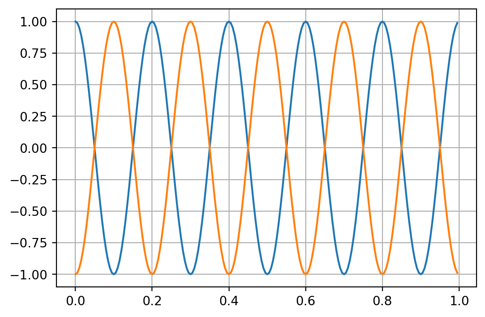

Show the code
import numpy as np
from numpy.fft import fft, ifft, fftfreq
import matplotlib.pyplot as pltimport numpy as np
from numpy.fft import fft, ifft, fftfreq
import matplotlib.pyplot as pltThe Hilbert transform \(V_y(y) = \mathcal H(V_z(y))\) is defined by \[ V_y(y) = - \frac{1}{\pi} -\!\!\!\!\!\! \int\limits_{-\infty}^\infty \frac{V_z(y')}{y - y'}\, \mathrm d y', \qquad\text{Cauchy principal value} \] which can be interpreted as a convolutional integral with the abbreviation \[ V_y = -\frac{1}{\pi y} * V_z. \] Exploiting the Fourier transform properties, we can equivalently replace the convolution in the spatial domain by a multiplication in the spectral domain, i.e., \[ \mathcal F(V_y) = \mathcal F\left(-\frac{1}{\pi y}\right) \cdot \mathcal F\left(V_z\right) \] The spectrum of the Hilbert transform operator is \[ \mathcal F\left(-\frac{1}{\pi y}\right) = i \, \text{sign}(k), \] where \(k\) is the corresponding variable in the spectral domain. In our case, \(k\) is referred to as wave number.
Essentially, the Hilbert transform can be obtained by \[ V_y(y) = \mathcal H(V_z(y)) = \mathcal F^{-1} \left( i \, \text{sign}(k) \mathcal F(V_z(y)) \right) \]
Since two spectra have to be multiplied properly, we have to know the precise location of the wavenumbers associated with the implementation of the FFT for a given programming language and/or library.
In what follows we use the FFT implementation of the Python numpy library.
For a given signal length \(N\) and a sampling interval \(\Delta t\), the Nyquist frequency is \[ f_{N} = \frac{1}{2 \Delta t}. \] A signal of length \(N\) gets transformed into a spectrum of length \(N\). The location of the associated frequencies is
f = [0, 1, ..., N/2-1, -N/2, ..., -1] / (dt * N) # if N is even
f = [0, 1, ..., (N-1)/2, -(N-1)/2, ..., -1] / (dt * N) # if N is oddWe construct a sinusoidal signal S with a frequency of \(f=5\) Hz, a period \(T=0.2\) s, and a signal length of \(L=1\) s. It holds \[
S(t) = \sin(\frac{2 \pi}{T}t) = \sin(2 \pi f t)
\] The sampling frequency is \(200\) Hz, which corresponds to a sampling interval of \(\Delta t=0.005\) s and a resulting window length of \(n=200\) samples.
The Nyquist frequency is \(f_N = 100\) Hz.
L = 1
f = 5
T = 1 / f
df = 200
t = np.arange(start = 0, stop = L, step = 1 / df, dtype=float)
S = np.cos(2 * np.pi * t / T)
n = len(S)
dt = L / n
fig, ax = plt.subplots(figsize=(6,4))
ax.plot(t, S)
ax.grid(True)
ax.set_xlabel("t in s");Now we calculate the Fourier spectrum of the signal. We use the FFT implementation of numpy. The array X contains the spectrum of S. Note that X is a complex-valued array.
We recognize that the major Fourier component of the signal is associated with \(f=\pm 5\) Hz.
The order of the fourier coefficients in X depends on the implementation. It can be calulated using fftfreq.
X = fft(S)
power = np.abs(X)**2 / n
fig, ax = plt.subplots(figsize=(6,4))
plt.vlines([-f, f], ymin=0, ymax=100, color='red', linewidth=1, label="f")
plt.plot(fftfreq(n, d=dt), power, 'o', markersize=2, label="spectrum")
plt.legend()
plt.xlabel("f in Hz")
plt.grid(True);Now let us compute the Hilbert transform of this signal. To this end, we provide the Fourier spectrum of the Hilbert transform operator, i.e., \[ \mathcal F(-\frac{1}{\pi t}, f) = i \, \text{sign}(f) \] The Hilbert transform of the cosine is the sine function.
fi = fftfreq(n, d=dt)
k = -1j * np.sign(fi)
H = ifft( k * X)
fig, ax = plt.subplots(figsize=(6,4))
plt.plot(t, S)
plt.plot(t, H.real)
plt.grid(True);
A second application of the Hilbert transform reveals its property of an anti-self adjoint operator, i.e., \[ \mathcal H(\mathcal H(u(t))) = -u(t) \]
SH = ifft( k * fft(H)).real
fig, ax = plt.subplots(figsize=(6,4))
plt.plot(t, S)
plt.plot(t, SH)
plt.grid(True);
We provide a Python function that calculates the horizontal and vertical component of the gravitational attraction caused by a horizontal cylinder of radius \(a\). The function requires as argument the point of observation obs and the point axis where the axis of the cylinder meets the plane of observation. Further, the mass \(m=\pi a^2 \rho\) of the cylinder must be given.
def cylinder(obs, mass, axis):
g = -2 * 6.674e-11 * mass / np.linalg.norm(obs - axis)**2 * (obs - axis)
return gy = np.linspace(start=-1000, stop=1000, num=2001)
g = np.zeros([len(y), 2])
dy = (y[-1] - y[0]) / (len(y)-1)
a = 10
rho = 500
depth = 20
mass = np.pi * a**2 * rho
for i, p in enumerate(y):
g[i, :] = cylinder(np.array([p, 0]), mass, np.array([0, depth]))Now we take \(V_z(y)\) and compute the Hilbert transform. Further, we compare to \(V_y(y)\).
k = fftfreq(len(y), d=dy)
V_H = ifft(1j * np.sign(k) * fft(g[:, 1])).realfig, ax = plt.subplots(figsize=(6,4))
plt.plot(y, g[:, 0], label="V_y")
plt.plot(y, g[:, 1], label="V_z")
plt.plot(y, V_H, label="V_y (Hilbert)")
plt.xlabel('y in m')
plt.legend()
plt.grid(True);We note that the Hilbert transform exhibits larger approximation errors towards the boundaries of the observation window.